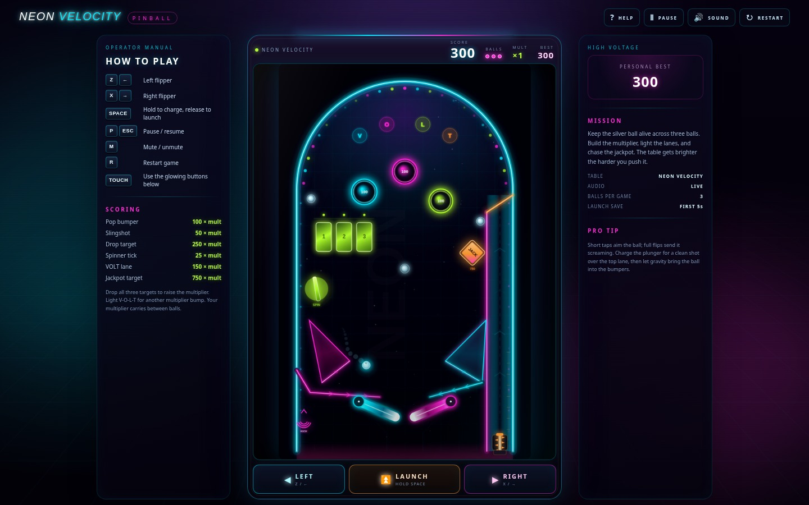
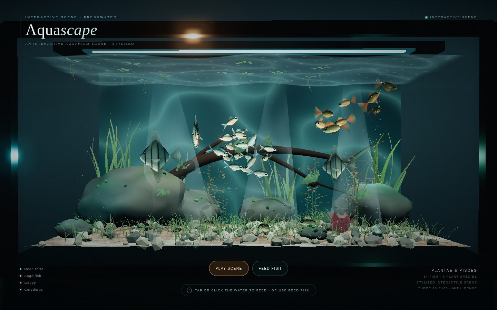
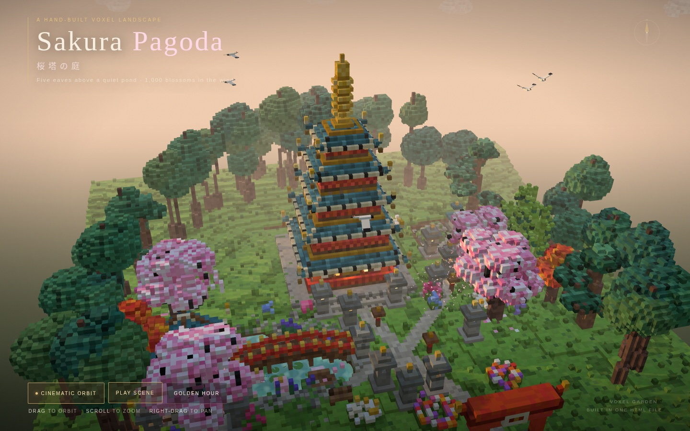
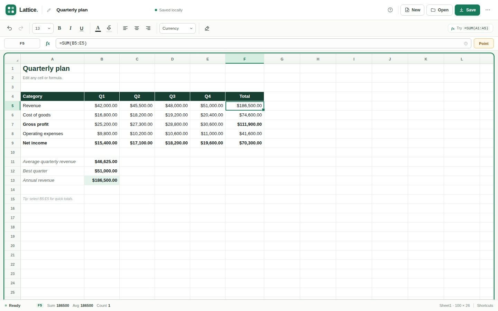

01 / GAMEA browser playground
作って、触って、
確かめる。
DSv4.1とDeepSeek Harnessで制作したブラウザアプリのサンプル集。ゲーム、動く3Dシーン、表計算を、インストールせずに試せます。

02 / SCENE
03 / WORLD
04 / TOOL使い方
各サンプルを直接開けます。3D表示にはWebGL対応ブラウザが必要です。ピンボールの音は操作後に始まります。表計算のデータはこのブラウザ内に保存されるので、残したい表はファイルにも保存してください。
制作について
公開前に操作確認と改善を行いました。ピンボールは時間よりも遊びやすさを優先して仕上げています。制作条件、元の課題文、修正内容、対応範囲はREADMEにまとめています。